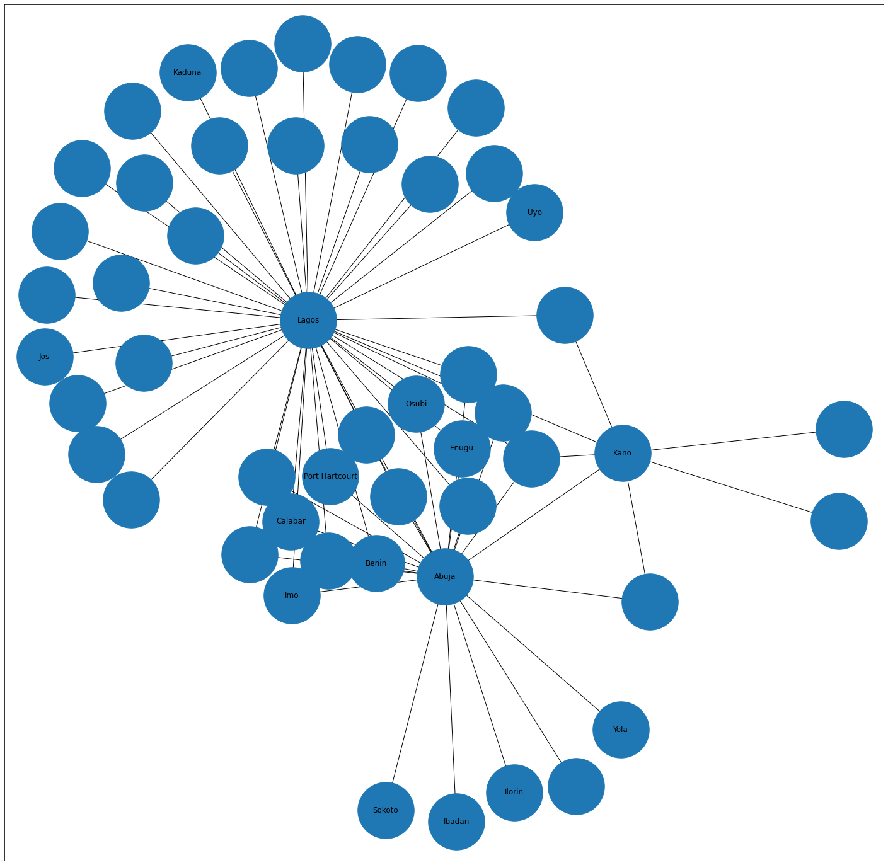
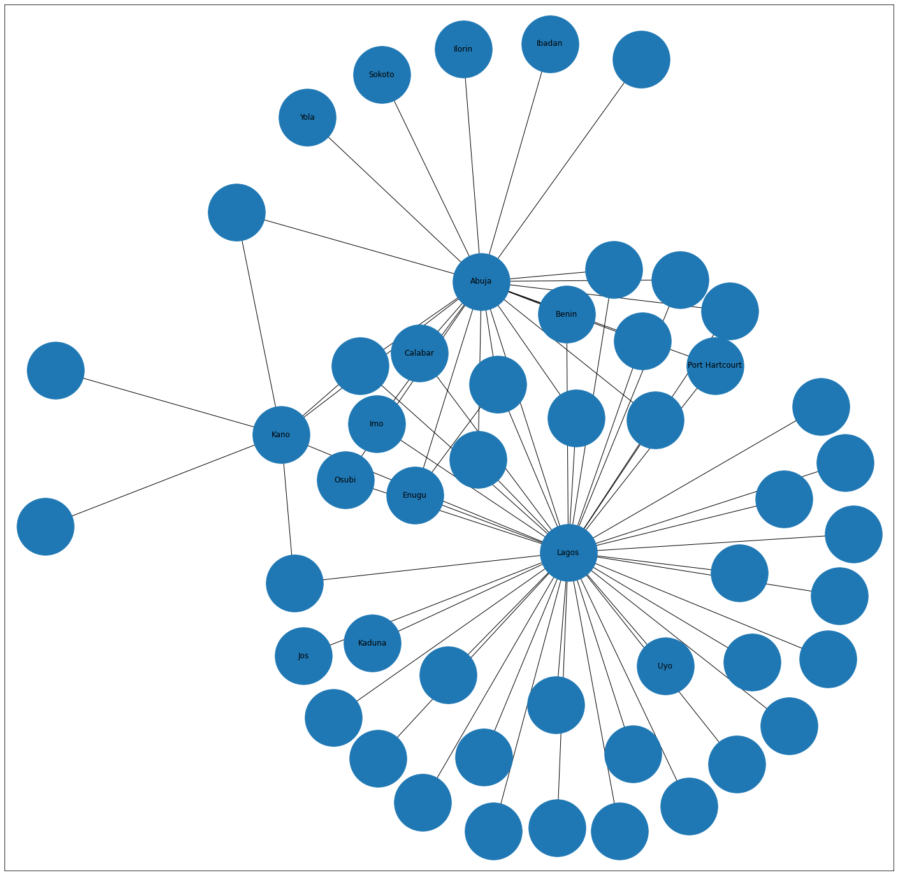
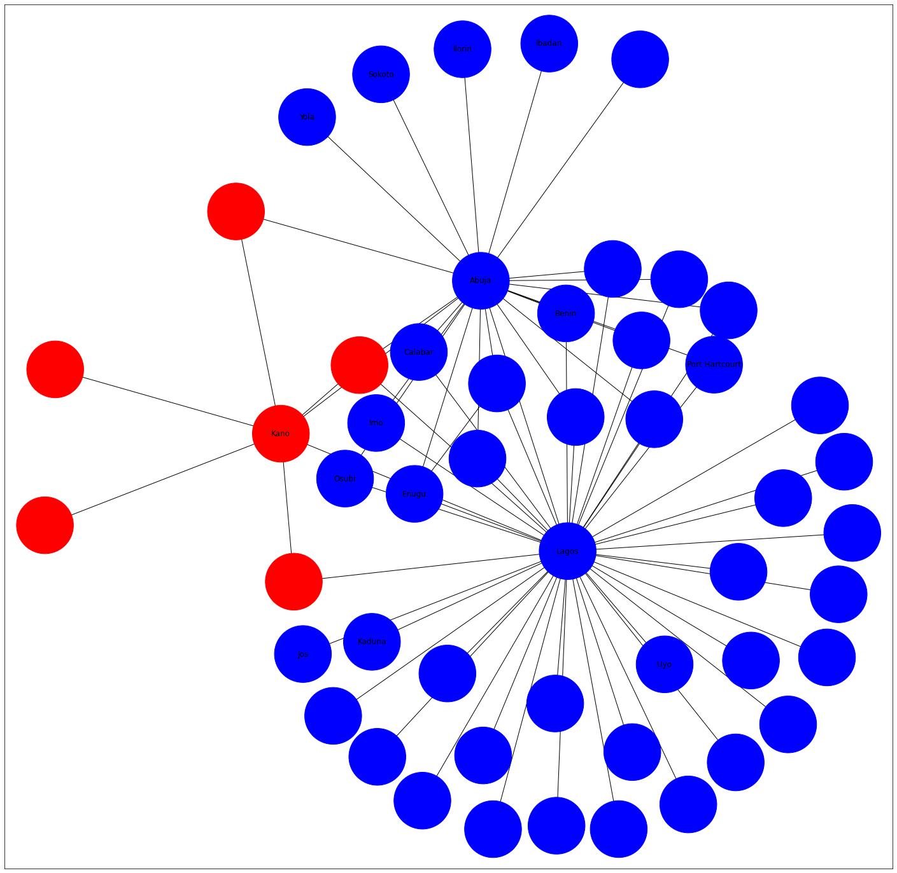

Nigerian airports
Nigerian airports¶
Author: Mofopeofluwa Onadeko
import pandas as pd
import matplotlib.pyplot as plt
import networkx as nx
%matplotlib inline
import numpy as np
import seaborn as sns
#import important libraries
edges_data=pd.read_csv('edges.csv')
edges_data.head(5)
#extract edge data
| # source | target | distance | airline | airline_code | codeshare | equipment | stops | |
|---|---|---|---|---|---|---|---|---|
| 0 | 0 | 2 | 124.520121 | CG | 1308 | 0 | DH8 DHT | 0 |
| 1 | 0 | 3 | 157.150822 | CG | 1308 | 0 | DH8 | 0 |
| 2 | 0 | 1 | 106.747399 | CG | 1308 | 0 | DH8 | 0 |
| 3 | 0 | 4 | 424.726096 | CG | 1308 | 0 | DH8 | 0 |
| 4 | 0 | 4 | 424.726096 | PX | 328 | 0 | DH4 DH8 DH3 | 0 |
nodes_data=pd.read_csv('nodes.csv')
nigerian_nodes=nodes_data[nodes_data[' country']=='Nigeria']
nigerian_nodes
#extract node data and refine it to nodes located in Nigeria
| # index | id | name | city | country | IATA/FAA | ICAO | latitude | longitude | altitude | timezone | DST | _pos | |
|---|---|---|---|---|---|---|---|---|---|---|---|---|---|
| 161 | 161 | 260 | Nnamdi Azikiwe International Airport | Abuja | Nigeria | ABV | DNAA | 9.00679 | 7.26317 | 1123 | 1.0 | N | array([5.89227097, 1.22581984]) |
| 162 | 162 | 262 | Benin Airport | Benin | Nigeria | BNI | DNBE | 6.31698 | 5.59950 | 258 | 1.0 | N | array([5.82652138, 1.24947111]) |
| 163 | 163 | 263 | Margaret Ekpo International Airport | Calabar | Nigeria | CBQ | DNCA | 4.97602 | 8.34720 | 210 | 1.0 | N | array([5.83364483, 1.25688692]) |
| 164 | 164 | 264 | Akanu Ibiam International Airport | Enugu | Nigeria | ENU | DNEN | 6.47427 | 7.56196 | 466 | 1.0 | N | array([5.8611661 , 1.26900437]) |
| 165 | 165 | 266 | Ibadan Airport | Ibadan | Nigeria | IBA | DNIB | 7.36246 | 3.97833 | 725 | 1.0 | N | array([5.77849562, 1.28440042]) |
| 166 | 166 | 267 | Ilorin International Airport | Ilorin | Nigeria | ILR | DNIL | 8.44021 | 4.49392 | 1126 | 1.0 | N | array([5.7667102 , 1.27778974]) |
| 167 | 167 | 268 | Yakubu Gowon Airport | Jos | Nigeria | JOS | DNJO | 9.63983 | 8.86905 | 4232 | 1.0 | N | array([5.80795479, 1.24882712]) |
| 168 | 168 | 269 | Kaduna Airport | Kaduna | Nigeria | KAD | DNKA | 10.69600 | 7.32011 | 2073 | 1.0 | N | array([5.81608725, 1.2657922 ]) |
| 169 | 169 | 270 | Mallam Aminu International Airport | Kano | Nigeria | KAN | DNKN | 12.04760 | 8.52462 | 1562 | 1.0 | N | array([5.93521986, 1.25622718]) |
| 170 | 170 | 273 | Murtala Muhammed International Airport | Lagos | Nigeria | LOS | DNMM | 6.57737 | 3.32116 | 135 | 1.0 | N | array([5.93753793, 1.20869642]) |
| 171 | 171 | 275 | Port Harcourt International Airport | Port Hartcourt | Nigeria | PHC | DNPO | 5.01549 | 6.94959 | 87 | 1.0 | N | array([5.86989284, 1.22791521]) |
| 172 | 172 | 276 | Sadiq Abubakar III International Airport | Sokoto | Nigeria | SKO | DNSO | 12.91630 | 5.20719 | 1010 | 1.0 | N | array([5.76060182, 1.26232544]) |
| 173 | 173 | 277 | Yola Airport | Yola | Nigeria | YOL | DNYO | 9.25755 | 12.43040 | 599 | 1.0 | N | array([5.77274829, 1.26768298]) |
| 2868 | 2868 | 6730 | Sam Mbakwe International Airport | Imo | Nigeria | QOW | DNIM | 5.42706 | 7.20603 | 373 | 1.0 | N | array([5.82648558, 1.23762315]) |
| 2946 | 2946 | 6972 | Warri Airport | Osubi | Nigeria | QRW | DNSU | 5.59611 | 5.81778 | 242 | 1.0 | U | array([5.83461586, 1.24420132]) |
| 3185 | 3185 | 9826 | Akwa Ibom International Airport | Uyo | Nigeria | QUO | DNAI | 4.87250 | 8.09300 | 170 | 1.0 | N | array([5.8241249 , 1.27531056]) |
ng_nodes=nodes_data[nodes_data[' country']=='Nigeria']
airport_id=ng_nodes['# index']
ng_city_nodes=pd.DataFrame(index=airport_id)
ng_city_nodes['airport']=nigerian_nodes[' IATA/FAA']
ng_city_nodes['city']=nigerian_nodes[' city']
ng_city_nodes
#Create dataframe of airports in nigeria and their corresponding cities
| airport | city | |
|---|---|---|
| # index | ||
| 161 | ABV | Abuja |
| 162 | BNI | Benin |
| 163 | CBQ | Calabar |
| 164 | ENU | Enugu |
| 165 | IBA | Ibadan |
| 166 | ILR | Ilorin |
| 167 | JOS | Jos |
| 168 | KAD | Kaduna |
| 169 | KAN | Kano |
| 170 | LOS | Lagos |
| 171 | PHC | Port Hartcourt |
| 172 | SKO | Sokoto |
| 173 | YOL | Yola |
| 2868 | QOW | Imo |
| 2946 | QRW | Osubi |
| 3185 | QUO | Uyo |
zero=[0, 0, 0, 0, 0, 0, 0, 0]
column_name_dict=dict.fromkeys(edges_data.columns.to_list(),[0,0])
column_name_dict
#Create dictionary for column names of edgelist
{'# source': [0, 0],
' target': [0, 0],
' distance': [0, 0],
' airline': [0, 0],
' airline_code': [0, 0],
' codeshare': [0, 0],
' equipment': [0, 0],
' stops': [0, 0]}
ng_edges=pd.DataFrame(data=column_name_dict)
for i in range(len(nodes_data['# index'])):
if edges_data['# source'][i] in nodes.index or edges_data[' target'][i] in nodes.index:
ng_edges.loc[i]=edges_data.loc[i]
ng_edges=ng_edges.drop([0, 1])
ng_edges
#create edgelist comprising of edges in and out of nigeria
| # source | target | distance | airline | airline_code | codeshare | equipment | stops | |
|---|---|---|---|---|---|---|---|---|
| 1981 | 153 | 170 | 106.394058 | AT | 4248 | 0 | 738 | 0 |
| 1992 | 153 | 161 | 613.209062 | ET | 2220 | 1 | DH8 | 0 |
| 2017 | 153 | 170 | 106.394058 | W3 | 20976 | 0 | CR9 73G | 0 |
| 2055 | 156 | 170 | 400.637086 | 3G | 595 | 0 | 319 | 0 |
| 2061 | 156 | 170 | 400.637086 | AW | 16960 | 0 | ER4 | 0 |
| ... | ... | ... | ... | ... | ... | ... | ... | ... |
| 2277 | 173 | 161 | 568.144830 | W3 | 20976 | 0 | CR9 73G | 0 |
| 2287 | 174 | 161 | 744.735046 | ET | 2220 | 1 | DH8 | 0 |
| 2448 | 182 | 161 | 733.938471 | ET | 2220 | 1 | DH8 | 0 |
| 2457 | 182 | 170 | 232.998365 | ET | 2220 | 0 | 73W | 0 |
| 3173 | 191 | 161 | 4564.978758 | LH | 3320 | 0 | 343 | 0 |
131 rows × 8 columns
g=nx.from_pandas_edgelist(ng_edges,'# source',' target')
pos=nx.kamada_kawai_layout(g)
label_dict={}
for i in ng_city_nodes.index.tolist():
label_dict[i]=ng_city_nodes['city'][i]
label_dict
#create label dictionary with ng_city_nodes data index and their corresponding cities
{161: 'Abuja',
162: 'Benin',
163: 'Calabar',
164: 'Enugu',
165: 'Ibadan',
166: 'Ilorin',
167: 'Jos',
168: 'Kaduna',
169: 'Kano',
170: 'Lagos',
171: 'Port Hartcourt',
172: 'Sokoto',
173: 'Yola',
2868: 'Imo',
2946: 'Osubi',
3185: 'Uyo'}
fig, ax = plt.subplots(1, 1, figsize=(25, 25))
nx.draw_networkx(g, ax=ax, with_labels=True, node_size=8000, labels=label_dict)
#plot network graph of flights in and out of Nigeria

degree=g.degree
sorted(degree, key=lambda x: x[1], reverse=True)[:10]
#calculate degree of each node
[(170, 42),
(161, 23),
(169, 7),
(508, 3),
(523, 3),
(164, 3),
(153, 2),
(156, 2),
(628, 2),
(171, 2)]
degree_centrality=nx.degree_centrality(g)
sorted(degree_centrality.items(), key=lambda x: x[1], reverse=True)[:10]
#calculate degree centrality of each node
[(170, 0.84),
(161, 0.46),
(169, 0.14),
(508, 0.06),
(523, 0.06),
(164, 0.06),
(153, 0.04),
(156, 0.04),
(628, 0.04),
(171, 0.04)]
closeness_centrality=nx.closeness_centrality(g)
sorted(closeness_centrality.items(), key=lambda x: x[1], reverse=True)[:10]
#calculate closeness centrality of each node
[(170, 0.8620689655172413),
(161, 0.6493506493506493),
(169, 0.5376344086021505),
(523, 0.5154639175257731),
(508, 0.5050505050505051),
(164, 0.5050505050505051),
(153, 0.5),
(156, 0.5),
(628, 0.5),
(171, 0.5)]
betweenness_centrality=nx.betweenness_centrality(g)
sorted(betweenness_centrality.items(), key=lambda x: x[0], reverse=False)[:10]
#calculate betweenness centrality of each node
[(153, 0.0),
(156, 0.0),
(160, 0.0),
(161, 0.27346938775510204),
(162, 0.0),
(163, 0.0),
(164, 0.0),
(165, 0.0),
(166, 0.0),
(167, 0.0)]
eigenvector_centrality=nx.eigenvector_centrality_numpy(g)
max_value=max(eigenvector_centrality.items(),key=lambda x: x[1])
sorted_eigenvector_centrality={}
for i in eigenvector_centrality.keys():
sorted_eigenvector_centrality[i]=eigenvector_centrality[i]/max_value[1]
sorted(sorted_eigenvector_centrality.items(), key=lambda x: x[1], reverse=True)[:10]
#calculate eigenvector centrality of each node
[(170, 1.0),
(161, 0.686967823214105),
(169, 0.30238852906706754),
(523, 0.25896022254707796),
(508, 0.25246101480613836),
(164, 0.25246101480613803),
(153, 0.21959744036222792),
(2946, 0.21959744036222792),
(255, 0.21959744036222786),
(182, 0.21959744036222786)]
edge_betweenness=nx.edge_betweenness_centrality(g).items()
sorted(edge_betweenness, key=lambda x: x[1], reverse=True)[:10]
#calculate edge betweenness of each node
[((170, 161), 0.12980392156862744),
((170, 169), 0.08509803921568627),
((170, 160), 0.0392156862745098),
((170, 167), 0.0392156862745098),
((170, 168), 0.0392156862745098),
((170, 500), 0.0392156862745098),
((170, 404), 0.0392156862745098),
((170, 486), 0.0392156862745098),
((170, 492), 0.0392156862745098),
((170, 474), 0.0392156862745098)]
page_rank=nx.pagerank(g)
{k: v for k, v in sorted(page_rank.items(), key=lambda item: item[1], reverse=True)}
#calculate page rank of each node
{170: 0.2865667946583785,
161: 0.1435943674113041,
169: 0.04611358618359465,
523: 0.01964759838711841,
508: 0.01960178854181843,
164: 0.01960178854181843,
1014: 0.014340574069420128,
153: 0.014048113121183498,
156: 0.014048113121183498,
628: 0.014048113121183498,
171: 0.014048113121183498,
255: 0.014048113121183498,
182: 0.014048113121183498,
191: 0.014048113121183498,
401: 0.014048113121183498,
162: 0.014048113121183498,
163: 0.014048113121183498,
2868: 0.014048113121183498,
2946: 0.014048113121183498,
454: 0.013847686054221427,
160: 0.008741088803485217,
167: 0.008741088803485217,
168: 0.008741088803485217,
500: 0.008741088803485217,
404: 0.008741088803485217,
486: 0.008741088803485217,
492: 0.008741088803485217,
474: 0.008741088803485217,
1809: 0.008741088803485217,
1017: 0.008741088803485217,
441: 0.008741088803485217,
1015: 0.008741088803485217,
578: 0.008741088803485217,
282: 0.008741088803485217,
2040: 0.008741088803485217,
3204: 0.008741088803485217,
1011: 0.008741088803485217,
381: 0.008741088803485217,
770: 0.008741088803485217,
1744: 0.008741088803485217,
484: 0.008741088803485217,
1870: 0.008741088803485217,
3185: 0.008741088803485217,
540: 0.008741088803485217,
544: 0.008540661736523146,
977: 0.008540661736523146,
174: 0.008248200788286517,
165: 0.008248200788286517,
166: 0.008248200788286517,
172: 0.008248200788286517,
173: 0.008248200788286517}
fig, ax = plt.subplots(1, 1, figsize=(25, 25))
nx.draw_networkx(g, ax=ax, with_labels=True, pos=pos, node_size=8000, labels=label_dict)
#plot the network of flights in and out of nigeria using kamada_kawai_layout

from networkx.algorithms.community.centrality import girvan_newman
communities=girvan_newman(g)
node_groups = []
for com in next(communities):
node_groups.append(list(com))
color_map = []
for node in g:
if node in node_groups[0]:
color_map.append('blue')
else:
color_map.append('red')
fig, ax = plt.subplots(1, 1, figsize=(25, 25))
nx.draw_networkx(g, ax=ax, node_color=color_map, with_labels=True, arrows=True, pos=pos, node_size=8000, labels=label_dict )
plt.show()
#perform girvan-newman community detection splitting the network into 2 communities

node_data = pd.DataFrame(index=g.nodes())
node_data["city"]=node_data.index.map(label_dict)
node_data["degree"] = node_data.index.map(dict(nx.degree(g)))
node_data["eigenvector"] = node_data.index.map(nx.eigenvector_centrality(g))
node_data["pagerank"] = node_data.index.map(nx.pagerank(g))
node_data["betweenness"] = node_data.index.map(nx.betweenness_centrality(g))
centrality_table=node_data.sort_values(by=["degree"], ascending=False)
centrality_table
#Table of airports and their centrality measures
| city | degree | eigenvector | pagerank | betweenness | |
|---|---|---|---|---|---|
| 170 | Lagos | 42 | 0.594261 | 0.286567 | 0.808571 |
| 161 | Abuja | 23 | 0.408239 | 0.143594 | 0.273469 |
| 169 | Kano | 7 | 0.179699 | 0.046114 | 0.093469 |
| 164 | Enugu | 3 | 0.150029 | 0.019602 | 0.000000 |
| 508 | NaN | 3 | 0.150029 | 0.019602 | 0.000000 |
| 523 | NaN | 3 | 0.153891 | 0.019648 | 0.000000 |
| 401 | NaN | 2 | 0.130499 | 0.014048 | 0.000000 |
| 1014 | NaN | 2 | 0.100749 | 0.014341 | 0.000000 |
| 2946 | Osubi | 2 | 0.130499 | 0.014048 | 0.000000 |
| 2868 | Imo | 2 | 0.130499 | 0.014048 | 0.000000 |
| 163 | Calabar | 2 | 0.130499 | 0.014048 | 0.000000 |
| 162 | Benin | 2 | 0.130499 | 0.014048 | 0.000000 |
| 153 | NaN | 2 | 0.130499 | 0.014048 | 0.000000 |
| 191 | NaN | 2 | 0.130499 | 0.014048 | 0.000000 |
| 156 | NaN | 2 | 0.130499 | 0.014048 | 0.000000 |
| 454 | NaN | 2 | 0.076534 | 0.013848 | 0.000000 |
| 182 | NaN | 2 | 0.130499 | 0.014048 | 0.000000 |
| 255 | NaN | 2 | 0.130499 | 0.014048 | 0.000000 |
| 171 | Port Hartcourt | 2 | 0.130499 | 0.014048 | 0.000000 |
| 628 | NaN | 2 | 0.130499 | 0.014048 | 0.000000 |
| 441 | NaN | 1 | 0.077357 | 0.008741 | 0.000000 |
| 1015 | NaN | 1 | 0.077357 | 0.008741 | 0.000000 |
| 578 | NaN | 1 | 0.077357 | 0.008741 | 0.000000 |
| 282 | NaN | 1 | 0.077357 | 0.008741 | 0.000000 |
| 2040 | NaN | 1 | 0.077357 | 0.008741 | 0.000000 |
| 3204 | NaN | 1 | 0.077357 | 0.008741 | 0.000000 |
| 381 | NaN | 1 | 0.077357 | 0.008741 | 0.000000 |
| 1011 | NaN | 1 | 0.077357 | 0.008741 | 0.000000 |
| 3185 | Uyo | 1 | 0.077357 | 0.008741 | 0.000000 |
| 1870 | NaN | 1 | 0.077357 | 0.008741 | 0.000000 |
| 770 | NaN | 1 | 0.077357 | 0.008741 | 0.000000 |
| 1744 | NaN | 1 | 0.077357 | 0.008741 | 0.000000 |
| 484 | NaN | 1 | 0.077357 | 0.008741 | 0.000000 |
| 1809 | NaN | 1 | 0.077357 | 0.008741 | 0.000000 |
| 1017 | NaN | 1 | 0.077357 | 0.008741 | 0.000000 |
| 167 | Jos | 1 | 0.077357 | 0.008741 | 0.000000 |
| 474 | NaN | 1 | 0.077357 | 0.008741 | 0.000000 |
| 492 | NaN | 1 | 0.077357 | 0.008741 | 0.000000 |
| 486 | NaN | 1 | 0.077357 | 0.008741 | 0.000000 |
| 404 | NaN | 1 | 0.077357 | 0.008741 | 0.000000 |
| 500 | NaN | 1 | 0.077357 | 0.008741 | 0.000000 |
| 977 | NaN | 1 | 0.023392 | 0.008541 | 0.000000 |
| 544 | NaN | 1 | 0.023392 | 0.008541 | 0.000000 |
| 168 | Kaduna | 1 | 0.077357 | 0.008741 | 0.000000 |
| 173 | Yola | 1 | 0.053142 | 0.008248 | 0.000000 |
| 172 | Sokoto | 1 | 0.053142 | 0.008248 | 0.000000 |
| 166 | Ilorin | 1 | 0.053142 | 0.008248 | 0.000000 |
| 165 | Ibadan | 1 | 0.053142 | 0.008248 | 0.000000 |
| 174 | NaN | 1 | 0.053142 | 0.008248 | 0.000000 |
| 160 | NaN | 1 | 0.077357 | 0.008741 | 0.000000 |
| 540 | NaN | 1 | 0.077357 | 0.008741 | 0.000000 |
sns.pairplot(node_data, vars=['degree', 'eigenvector', 'pagerank', 'betweenness'], height=4)
#comparison of different centrality measures
<seaborn.axisgrid.PairGrid at 0x1d8db9caf10>
pip install dataframe-image
Collecting dataframe-imageNote: you may need to restart the kernel to use updated packages.
Downloading dataframe_image-0.1.1-py3-none-any.whl (32 kB)
Requirement already satisfied: beautifulsoup4 in c:\users\mofop\anaconda3\lib\site-packages (from dataframe-image) (4.9.1)
Requirement already satisfied: nbconvert>=5 in c:\users\mofop\anaconda3\lib\site-packages (from dataframe-image) (5.6.1)
Requirement already satisfied: matplotlib>=3.1 in c:\users\mofop\anaconda3\lib\site-packages (from dataframe-image) (3.2.2)
Requirement already satisfied: pandas>=0.24 in c:\users\mofop\anaconda3\lib\site-packages (from dataframe-image) (1.0.5)
Collecting aiohttp
Downloading aiohttp-3.8.1-cp38-cp38-win_amd64.whl (555 kB)
Requirement already satisfied: requests in c:\users\mofop\anaconda3\lib\site-packages (from dataframe-image) (2.24.0)
Requirement already satisfied: soupsieve>1.2 in c:\users\mofop\anaconda3\lib\site-packages (from beautifulsoup4->dataframe-image) (2.0.1)
Requirement already satisfied: entrypoints>=0.2.2 in c:\users\mofop\anaconda3\lib\site-packages (from nbconvert>=5->dataframe-image) (0.3)
Requirement already satisfied: bleach in c:\users\mofop\anaconda3\lib\site-packages (from nbconvert>=5->dataframe-image) (3.1.5)
Requirement already satisfied: jinja2>=2.4 in c:\users\mofop\anaconda3\lib\site-packages (from nbconvert>=5->dataframe-image) (2.11.2)
Requirement already satisfied: mistune<2,>=0.8.1 in c:\users\mofop\anaconda3\lib\site-packages (from nbconvert>=5->dataframe-image) (0.8.4)
Requirement already satisfied: testpath in c:\users\mofop\anaconda3\lib\site-packages (from nbconvert>=5->dataframe-image) (0.4.4)
Requirement already satisfied: traitlets>=4.2 in c:\users\mofop\anaconda3\lib\site-packages (from nbconvert>=5->dataframe-image) (4.3.3)
Requirement already satisfied: nbformat>=4.4 in c:\users\mofop\anaconda3\lib\site-packages (from nbconvert>=5->dataframe-image) (5.0.7)
Requirement already satisfied: defusedxml in c:\users\mofop\anaconda3\lib\site-packages (from nbconvert>=5->dataframe-image) (0.6.0)
Requirement already satisfied: jupyter-core in c:\users\mofop\anaconda3\lib\site-packages (from nbconvert>=5->dataframe-image) (4.6.3)
Requirement already satisfied: pandocfilters>=1.4.1 in c:\users\mofop\anaconda3\lib\site-packages (from nbconvert>=5->dataframe-image) (1.4.2)
Requirement already satisfied: pygments in c:\users\mofop\anaconda3\lib\site-packages (from nbconvert>=5->dataframe-image) (2.6.1)
Requirement already satisfied: kiwisolver>=1.0.1 in c:\users\mofop\anaconda3\lib\site-packages (from matplotlib>=3.1->dataframe-image) (1.2.0)
Requirement already satisfied: numpy>=1.11 in c:\users\mofop\anaconda3\lib\site-packages (from matplotlib>=3.1->dataframe-image) (1.18.5)
Requirement already satisfied: cycler>=0.10 in c:\users\mofop\anaconda3\lib\site-packages (from matplotlib>=3.1->dataframe-image) (0.10.0)
Requirement already satisfied: pyparsing!=2.0.4,!=2.1.2,!=2.1.6,>=2.0.1 in c:\users\mofop\anaconda3\lib\site-packages (from matplotlib>=3.1->dataframe-image) (2.4.7)
Requirement already satisfied: python-dateutil>=2.1 in c:\users\mofop\anaconda3\lib\site-packages (from matplotlib>=3.1->dataframe-image) (2.8.1)
Requirement already satisfied: pytz>=2017.2 in c:\users\mofop\anaconda3\lib\site-packages (from pandas>=0.24->dataframe-image) (2020.1)
Collecting charset-normalizer<3.0,>=2.0
Downloading charset_normalizer-2.0.10-py3-none-any.whl (39 kB)
Collecting multidict<7.0,>=4.5
Downloading multidict-5.2.0-cp38-cp38-win_amd64.whl (45 kB)
Collecting frozenlist>=1.1.1
Downloading frozenlist-1.3.0-cp38-cp38-win_amd64.whl (33 kB)
Collecting aiosignal>=1.1.2
Downloading aiosignal-1.2.0-py3-none-any.whl (8.2 kB)
Collecting yarl<2.0,>=1.0
Downloading yarl-1.7.2-cp38-cp38-win_amd64.whl (122 kB)
Requirement already satisfied: attrs>=17.3.0 in c:\users\mofop\anaconda3\lib\site-packages (from aiohttp->dataframe-image) (19.3.0)
Collecting async-timeout<5.0,>=4.0.0a3
Downloading async_timeout-4.0.2-py3-none-any.whl (5.8 kB)
Requirement already satisfied: urllib3!=1.25.0,!=1.25.1,<1.26,>=1.21.1 in c:\users\mofop\anaconda3\lib\site-packages (from requests->dataframe-image) (1.25.9)
Requirement already satisfied: certifi>=2017.4.17 in c:\users\mofop\anaconda3\lib\site-packages (from requests->dataframe-image) (2020.6.20)
Requirement already satisfied: idna<3,>=2.5 in c:\users\mofop\anaconda3\lib\site-packages (from requests->dataframe-image) (2.10)
Requirement already satisfied: chardet<4,>=3.0.2 in c:\users\mofop\anaconda3\lib\site-packages (from requests->dataframe-image) (3.0.4)
Requirement already satisfied: webencodings in c:\users\mofop\anaconda3\lib\site-packages (from bleach->nbconvert>=5->dataframe-image) (0.5.1)
Requirement already satisfied: packaging in c:\users\mofop\anaconda3\lib\site-packages (from bleach->nbconvert>=5->dataframe-image) (20.4)
Requirement already satisfied: six>=1.9.0 in c:\users\mofop\anaconda3\lib\site-packages (from bleach->nbconvert>=5->dataframe-image) (1.15.0)
Requirement already satisfied: MarkupSafe>=0.23 in c:\users\mofop\anaconda3\lib\site-packages (from jinja2>=2.4->nbconvert>=5->dataframe-image) (1.1.1)
Requirement already satisfied: ipython-genutils in c:\users\mofop\anaconda3\lib\site-packages (from traitlets>=4.2->nbconvert>=5->dataframe-image) (0.2.0)
Requirement already satisfied: decorator in c:\users\mofop\anaconda3\lib\site-packages (from traitlets>=4.2->nbconvert>=5->dataframe-image) (4.4.2)
Requirement already satisfied: jsonschema!=2.5.0,>=2.4 in c:\users\mofop\anaconda3\lib\site-packages (from nbformat>=4.4->nbconvert>=5->dataframe-image) (3.2.0)
Requirement already satisfied: pywin32>=1.0; sys_platform == "win32" in c:\users\mofop\anaconda3\lib\site-packages (from jupyter-core->nbconvert>=5->dataframe-image) (227)
Requirement already satisfied: pyrsistent>=0.14.0 in c:\users\mofop\anaconda3\lib\site-packages (from jsonschema!=2.5.0,>=2.4->nbformat>=4.4->nbconvert>=5->dataframe-image) (0.16.0)
Requirement already satisfied: setuptools in c:\users\mofop\anaconda3\lib\site-packages (from jsonschema!=2.5.0,>=2.4->nbformat>=4.4->nbconvert>=5->dataframe-image) (49.2.0.post20200714)
Installing collected packages: charset-normalizer, multidict, frozenlist, aiosignal, yarl, async-timeout, aiohttp, dataframe-image
Successfully installed aiohttp-3.8.1 aiosignal-1.2.0 async-timeout-4.0.2 charset-normalizer-2.0.10 dataframe-image-0.1.1 frozenlist-1.3.0 multidict-5.2.0 yarl-1.7.2
Citations:
The openflights.org website.”, https://openflights.org/data.html